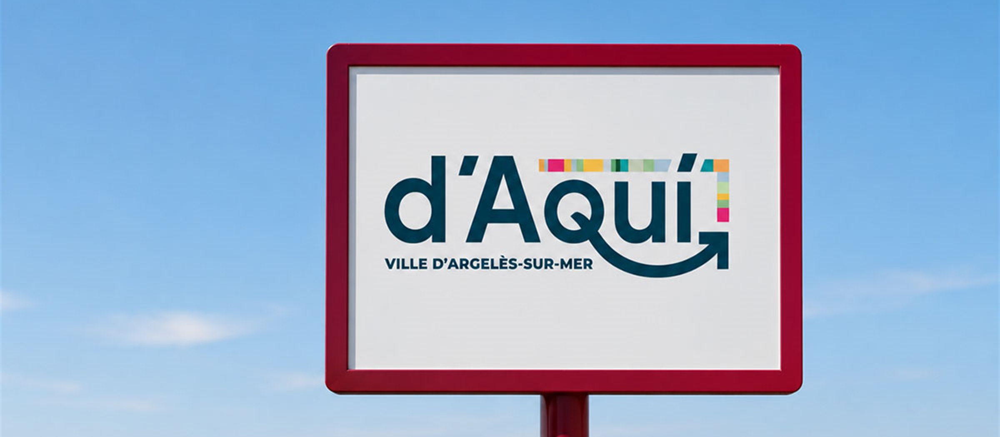
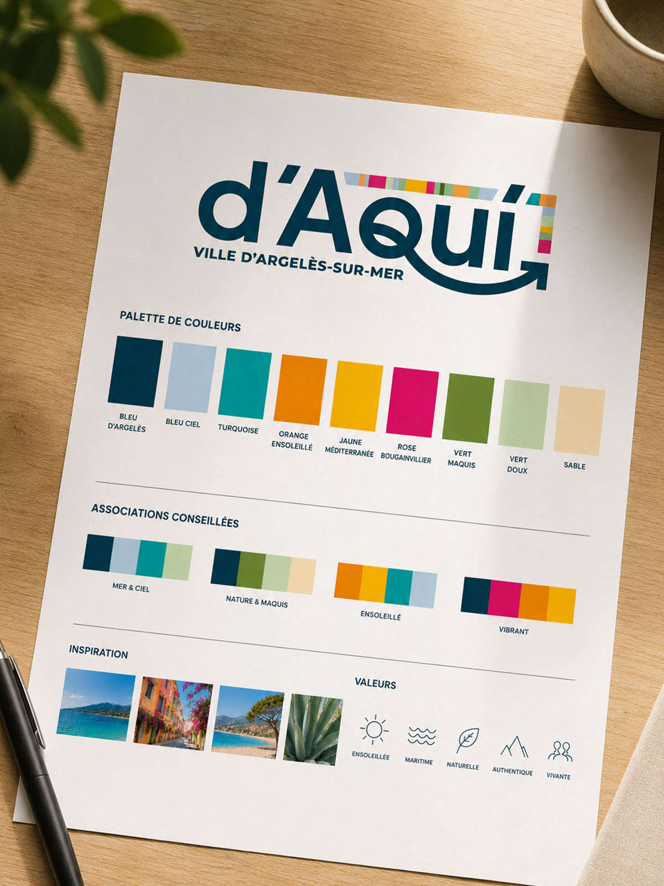
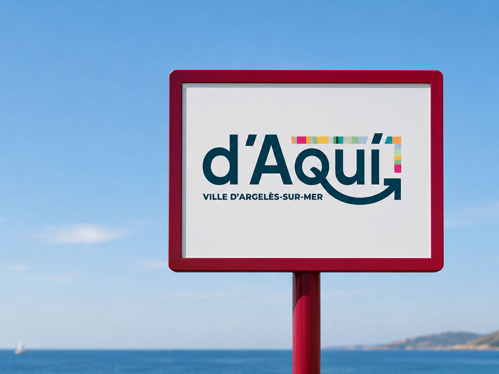
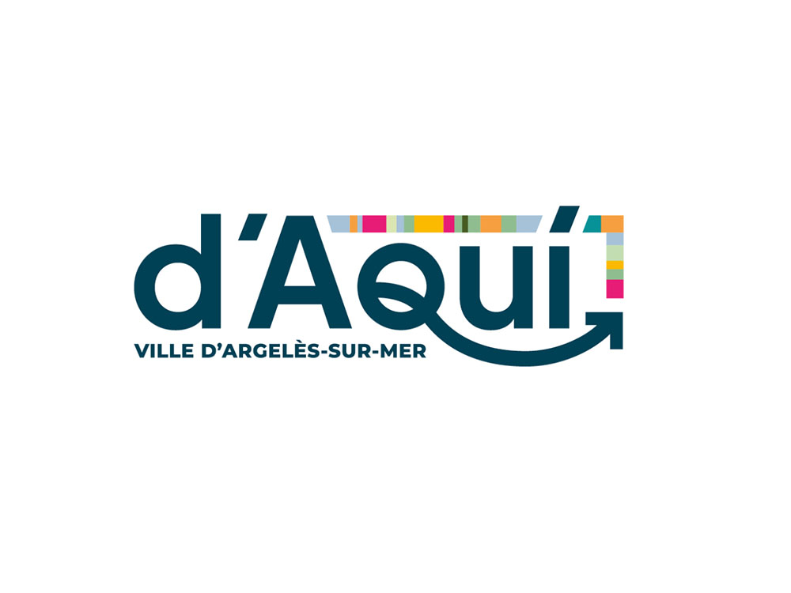

Argelès-sur-Mer se dote d'un tout nouveau réseau de transport. Keolis pour le faire rouler, mais une ligne flambant neuve n'a ni nom familier, ni visage. Comment faire adopter par les habitants comme par les vacanciers un service qui n'existait pas hier ? Il fallait une marque qui dise, d'un seul regard : c'est le vôtre, c'est d'ici.
Mission menée au sein de l'agence SEDICOM, avec les équipes. On est allé puiser dans l'identité du pays catalan : « D'aquí », c'est « d'ici ». Pour les couleurs, on s'est inspiré des tissus catalans, ces toiles à rayures vives qui claquent au soleil, déclinées en une frise comme la diversité des lignes et des publics. Une flèche trace l'itinéraire et file vers le large, sur un bleu profond de Méditerranée. Le tout réuni dans une charte graphique complète.
Un réseau qui a tout de suite une âme, que les Argelésiens peuvent vraiment appeler le leur.



D'AQUI ne ressemble à aucun autre transport : il parle catalan, il porte les couleurs d'ici, il donne envie de monter à bord. De la navette au petit train, une signature cohérente qui ancre le service dans son territoire.